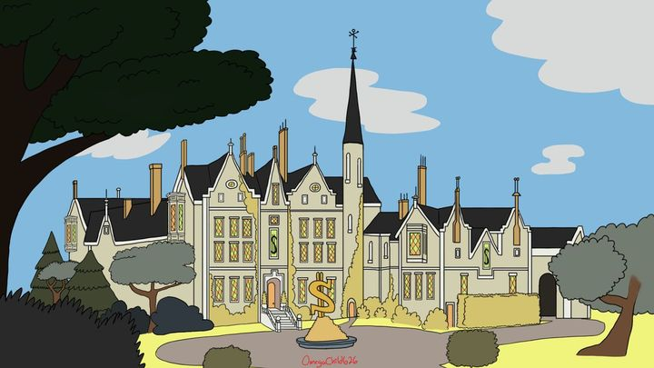

El Misterio de la Mansión
Una historia de secretos, decisiones y aventura
Conoce a Paco
Paco es un personaje carismático y aventurero que siempre está buscando nuevas experiencias. Con su espíritu intrépido y su corazón valiente, Paco se embarca en emocionantes viajes que lo llevan a descubrir tesoros ocultos. Pero esta vez, su aventura será diferente...
La Mansión de Tío Rico
Paco no había visitado la mansión de su tío Rico McPato desde hacía años. La enorme construcción de piedra se alzaba frente a él, imponente y silenciosa, como si observara cada uno de sus movimientos. El viento movía las hojas del jardín y un escalofrío recorrió su espalda.

El Primer Misterio
Al entrar, Paco notó algo extraño: una rosa roja descansaba sobre el suelo de la casa. No estaba marchita, parecía estar fresca como si la dejaran allí hace apenas unos minutos. Entonces escuchó una risa suave proveniente del patio trasero. Paco entendió que su visita a la mansión de su tío no era una reunión; algo más estaba ocurriendo en la casa y él quería descubrirlo.